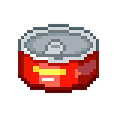

The player operates Puss in Brot Invasion through the use of the keyboard. Use W for upward movement and S for downward movement, remaining inside the screen limits. The gamer should not be hit by goblins and the brain projectiles coming from the right-hand side of the screen. Use E to fire fur balls towards the enemies. There will be a brief delay between each shot; therefore, careful planning is needed before launching an attack. As the game continues, the number of enemies increases, making it difficult to dodge the attacks. There are power-ups that gamers can collect during the game. The bubble gives temporary protection against attacks, whereas the can replenishes life or health.
UP
DOWN
SHOOT
SHIELD

HEALTH
Within the cute world where there are a lot of kitty cats called Pussination, there exists Puss, a very relaxed cat which mostly spends its time sleeping and not paying attention to anything around. Puss develops a cold, but this time a strange one which gives him unusual strength, bravery, and power despite being unwell. This time Puss feels like nothing is able to bring him down, and he uses this power without knowing how it works. While Puss is still trying to figure out what happened to him, mischievous goblins come back to life planning an attack to conquer Pussination, and to eat all the cats in it. Goblins attack Pussination creating havoc and throwing brains in every place causing complete madness in Pussination. This time, instead of sleeping and not paying attention to what is going on, Puss decides to protect everyone and creates the funniest battle for life ever before.
The aim of the game is to stay alive for as long as possible while repelling waves of invading goblins. Our player which gonna play the hero (Puss) should defend the Pussination from enemies by dodging their attacks and survive. Power-ups like shields and health boosts will aid the player in surviving longer.
Action Survival / Wave Defense / Fantasy